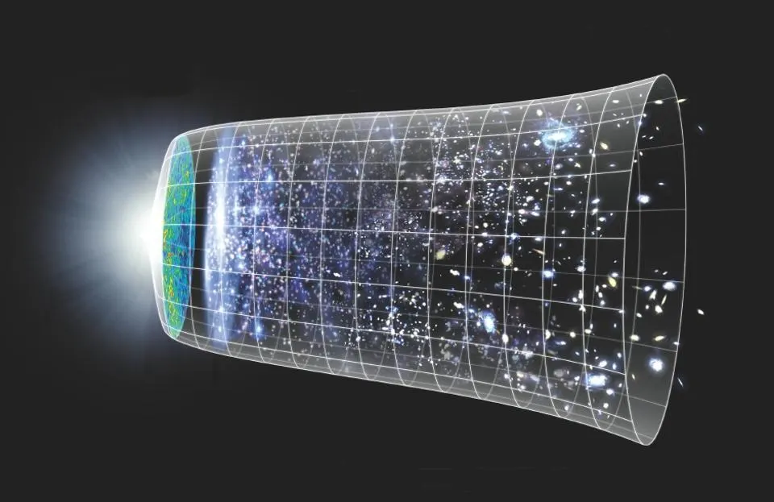
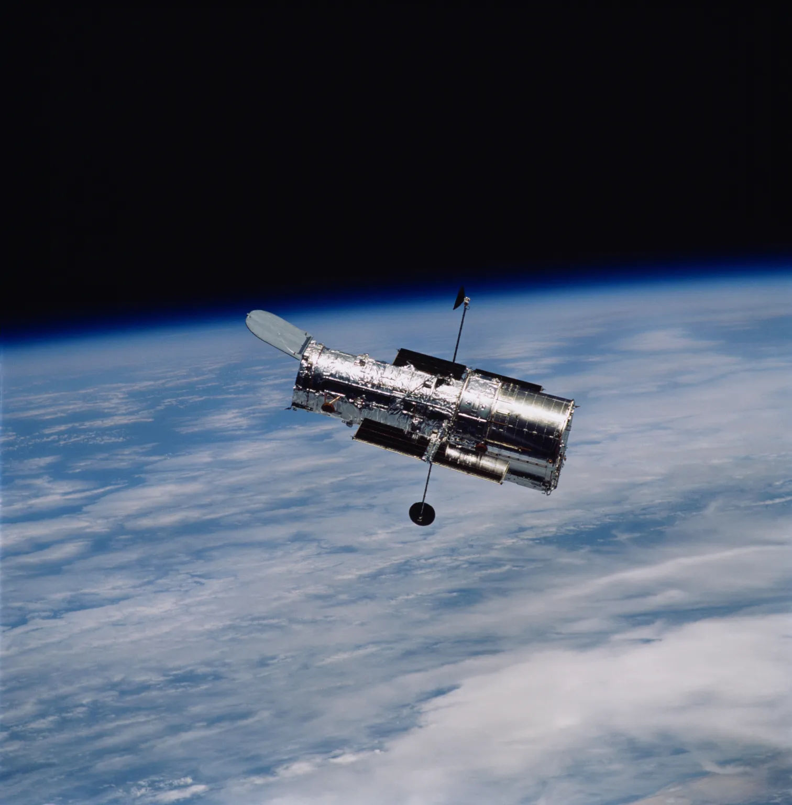

Journey Through Astronomy
Click on a year to reveal the cosmic breakthrough
Try clicking on the astronaut!
Galileo’s Telescope
Galileo Galilei was part of a small group of astronomers who turned telescopes towards the heavens. After hearing about the "Danish perspective glass" in 1609, Galileo constructed his own telescope and discovers Jupiter’s moons, revolutionizing astronomy.

Quiz: Which of Jupiter's moons did Galileo discover first?
Newton’s Principia
Isaac Newton publishes *Principia Mathematica*, describing the laws of motion and universal gravitation. The law of universal gravitation, which he also confirmed from such further phenomena as the tides and the orbits of comets, states that every particle of matter in the universe attracts every other particle with a force that is proportional to the product of their masses and inversely proportional to the square of the distance between their centres.

Quiz: Newton's law of universal gravitation was first published in which year?
Discovery of Uranus
Slightly before midnight on 13 March 1781, in his back garden in Bath, German-born musician and astronomer William Herschel saw a strange object in the eyepiece of his homemade telescope. The curio, which Herschel initially thought might be a comet, would go on to be confirmed as a seventh planet, encircling the Sun at twice the distance of Saturn. It was the first new planet found with a telescope.

Quiz: Which instrument did William Herschel use to discover Uranus?
Einstein’s General Relativity
Albert Einstein publishes his theory of General Relativity, explaining gravity as the curvature of space-time caused by mass and energy. Theo theory replaced Newton's view of gravity and predicted phenomena like light bending around massive objects, later confirmed in 1919.

Quiz: Which phenomenon did Einstein predict that was confirmed during the 1919 solar eclipse?
Expanding Universe
Edwin Hubble discovers that galaxies are moving away from us, showing that the universe is expanding. By observing the redshift of light from distant galaxies, he provided the first evidence for what would become the Big Bang theory.
Quiz: Edwin Hubble determined galaxies are moving away using which law?
Apollo 11
Neil Armstrong and Buzz Aldrin become the first humans to walk on the Moon during Apollo 11. Armstrong's worlds, "onde giant leap for manking", marked a defining moment in space exploration.

Quiz: What was the name of the lunar module that landed on the Moon?
Hubble Space Telescope
NASA launches the Hubble Space Telescope, giving humanity stunning images of space. Despite an initial mirror flaw later fixed, Hubble transformed astronomy with discoveries about galaxies, nubulae and the age of the universe.
Quiz: What was the main issue with Hubble after launch that required a servicing mission?
Black Hole Image
The Event Horizon Telescope captures the first image of a black hole in galaxy M87. The picture showed a glowing ring around the black hole's shadow, confirming Einstein's predictions with direct visual proof.

Quiz: The first black hole image captured by the Event Horizon Telescope was in which galaxy?
James Webb Telescope
The James Webb Space Telescope is launched with powerful infrared vision. Its mission is to study the first galaxies, the borth of stars and distant exoplanets, pushing astronomy to new frontiers.

Quiz: What is the main advantage of the James Webb Space Telescope over Hubble?